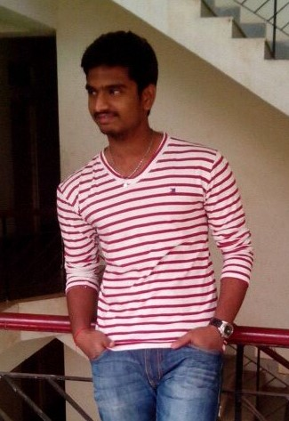

My name is Hareesh Kulakarni Narravula.I was born in Pulivendula in Andhra Pradesh on 05-05-1996.My Zodiac sign is Gemini.The first phase started from my school days.I have done my schooling in two stages-upto 7th in Sri Swamy Vivekananda High School in Pulivendula and then moved to Viswabharathi High School in Gudiwada where i completed my 10th standard with some memorable achievements.They are:
- District 1st Rank holder in Ravindra Bharathi school of education state wide competetion examination in 8th standard
- District 1st Rank holder in Narayana olympiad school state wide competetion examination in my 9th standard
- State 2nd Rank in Physics in A.S.Rao Awards Counsil examination in 9th standard
- State 16th Rank holder in A.S.Rao Awards Counsil examination in 9th standard
- All India 15th Rank holder in AMTI(Association of Mathematics Teachers of India) Examination
- State 5th Rank in Sri Chaithanya Olympiad Schools state wide competetion examination in 10th standard
- State 6th Rank in Narayana Olympiad Schools state wide competetion examination in 10th standard
- Secured 92.7% in State Board Examinations
Here after 2nd phase in my life started.I have done my 11th class in Narayana Junior college and 12th class in the joint institute of Narayana and Sri Chaithanya Institutions where I achieved the following :
- Secured 96.4% in 12th standard Board Examinations
- Succesfully cleared IIT-JEE Examination with 963* Rank
3rd phase started in my life.At present I am a 2nd year ungraduate student of the department of Mathematics enrolled in its 5year Integrated course of Msc Mathematics and Computing in Indian Institute of Technolgy(IIT) Kharagpur.I am a border of Megnad Saha Hall of residence.In my 1st year I attended many interviews for selections into societies in college.Some of my interests explored in IIT KGP are ::
- The interest in my acting got ignited by Prasthanam Technolgy Dramatic Society.It gave me the opportunity to prove my skills in acting by performing on stage.I took part in 3 productions of this society in which I acted in 2 productions.The 3 productions are:
- PRODUCTION NO.1
- FLASHBACK
- MVP COLONY SECTOR 4-452
- In order to improve my managing and leadership qualities I participated in college Elections and won as Secretary Gymnasium and Wieght Lifting Sub-Committee with 346 votes majority.Here my budget managing skills are shown based on the way how the budget of Rs6.86 lakhs were spent